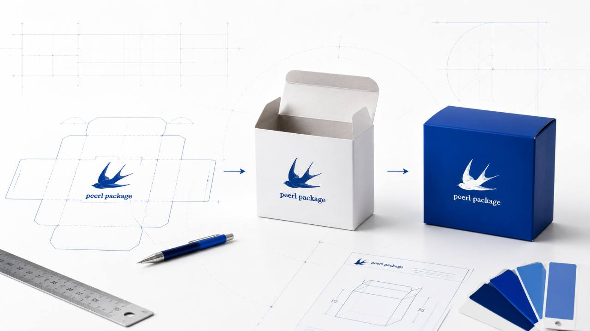
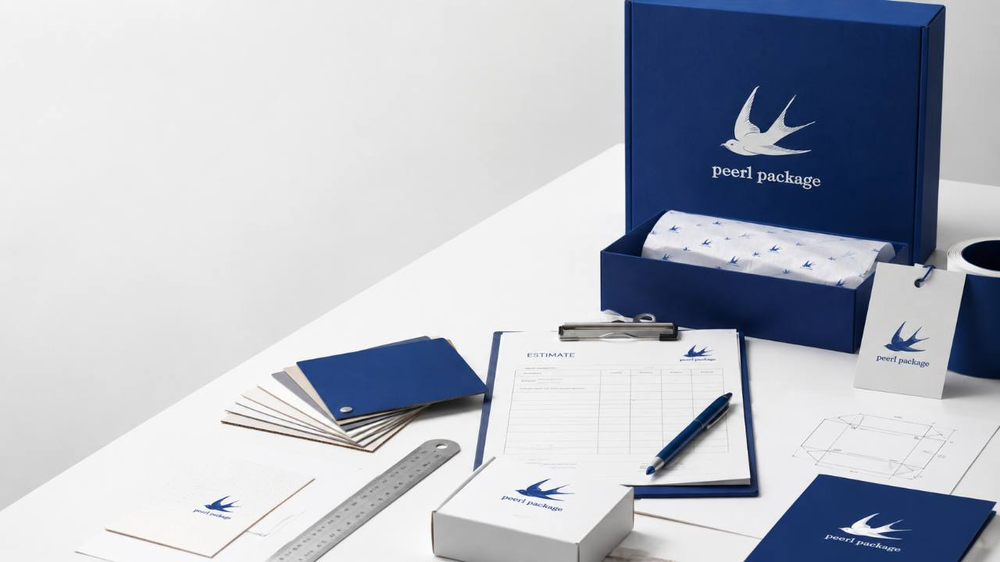

START HERE
필요한 방식부터 고르세요
재고가 있는 포장재 구매와 브랜드 맞춤제작 상담을 분리했습니다. 지금 필요한 상황에 맞춰 바로 이동하세요.
- 샘플·소량
- 재고형 상품
- 빠른 주문
- 1,000개 전후
- 별도 규격
- 인쇄·후가공
- 사이즈 기준
- 원단 선택
- 견적 준비
WEEKLY BEST
기성품 베스트
 쇼핑백
쇼핑백
CUSTOM SERVICE
맞춤제작 서비스

PRODUCTION FLOW
상담부터 납품까지 이렇게 진행됩니다
제품 크기, 수량, 원단, 인쇄 방식이 정리되면 견적과 제작 일정이 훨씬 빨라집니다. 처음 문의하는 고객도 순서대로 준비할 수 있게 구성했습니다.
- 01 문의 접수 필요한 패키지 종류, 예상 수량, 사용 목적을 먼저 확인합니다.
- 02 규격·구조 정리 단박스, 싸바리박스, 쇼핑백 등 제품에 맞는 구조와 사이즈를 잡습니다.
- 03 견적·일정 확정 원단, 인쇄, 박, 형압, 코팅 여부를 반영해 제작 조건을 정리합니다.
-
 04
디자인 파일 검수
로고, 전개도, 인쇄 데이터의 누락이나 제작 오류 가능성을 확인합니다.
04
디자인 파일 검수
로고, 전개도, 인쇄 데이터의 누락이나 제작 오류 가능성을 확인합니다.
- 05 제작·납품 인쇄와 후가공, 조립과 검수 과정을 거쳐 일정에 맞춰 납품합니다.
GUIDE CHECK
처음 문의해도 기준을 잡을 수 있게 정리했습니다
노션 초안의 제작가이드 흐름을 메인에 반영했습니다. 고객이 상품을 고르기 전에 원단, 사이즈, 인쇄, 파일 준비 기준을 먼저 확인할 수 있습니다.
BY INDUSTRY
업종에 맞는 패키지를 빠르게 고르세요
처음 제작할 때는 업종과 제품 특성부터 맞추는 것이 중요합니다. 자주 상담하는 업종별로 필요한 패키지 방향을 정리했습니다.

FAQ
문의 전에 많이 묻는 질문
최소 수량, 샘플 제작, 도면 준비, 제작 기간처럼 견적 전에 자주 막히는 부분을 먼저 정리했습니다.
기성품 구매와 맞춤제작은 어떻게 다른가요?
기성품은 재고가 있는 쇼핑백, 박스, 봉투, 부자재를 바로 구매하는 방식입니다. 맞춤제작은 로고 인쇄, 별도 규격, 원단, 후가공을 정해 새로 제작하는 방식입니다.
맞춤제작 최소 수량은 어떻게 잡으면 되나요?
제품 구조와 원단, 인쇄 방식에 따라 달라집니다. 페르패키지는 소량 샘플부터 1,000개 전후의 B2B 본제작까지 상담하므로 필요한 수량을 먼저 알려주시면 제작 가능 방향을 확인해드립니다.
도면이나 디자인 파일이 없어도 문의할 수 있나요?
가능합니다. 제품 사진, 대략적인 가로·세로·높이, 참고 패키지만 있어도 상담을 시작할 수 있습니다. 정확한 제작 전에는 전개도와 인쇄 데이터를 검수합니다.
제작 기간은 얼마나 걸리나요?
기성품은 재고와 주문 조건에 따라 빠르게 준비할 수 있고, 맞춤제작은 구조 확정, 디자인 검수, 인쇄와 후가공 조건에 따라 일정이 달라집니다. 납품 희망일이 있다면 상담 때 함께 알려주세요.

QUOTE READY
상담 전 이것만 준비하면 견적이 빨라집니다
- 제품 사진 또는 참고 패키지
- 가로·세로·높이 사이즈
- 필요 수량과 납품 일정
- 인쇄, 박, 형압, 코팅 등 후가공 여부